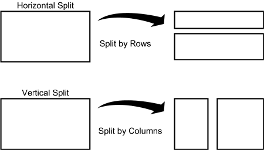
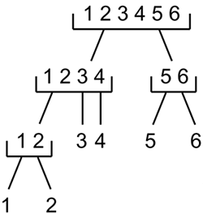

|
|
< Day Day Up > |
|
Normalization and DenormalizationOne of the biggest challenges of DB2 database design and implementation can be handling normalization. This section will help you by defining normalization and denormalization and providing tips and guidelines on when and how to denormalize. NormalizationNormalization is a database design approach that minimizes data redundancy and optimizes data structures by systematically and properly placing data elements into appropriate groupings. A normalized data model can be translated into a physical database that is organized correctly. Another way of putting it is that normalization is the process of putting one fact in one appropriate place. E.F. Codd, the father of the relational model, also created normalization. Like the relational model, normalization is based on the mathematical principles of set theory. It is important to remember that normalization is a logical process and does not necessarily dictate physical database design. A normalized data model will ensure that each entity is well-formed and that each attribute is assigned to the proper entity. Of course, the best situation is when a normalized logical data model can be physically implemented without major modifications. But keep in mind that normalization optimizes updates at the expense of retrievals. When a fact is stored in only one place, retrieving many different but related facts usually requires going to many different places. This tends to slow the retrieval process. Updating is quicker, however, because the fact you're updating exists in only one place. Your DB2 tables should be based on a normalized logical data model. With a normalized data model, one fact is stored in one place, related facts about a single entity are stored together, and every column of each entity refers non-transitively to only the unique identifier for that entity. Although an in-depth discussion of normalization is beyond the scope of this book, brief definitions of the first three normal forms follow.
So, normalization can be summed up as "every attribute must depend upon the key, the whole key, and nothing but the key, so help me Codd." DenormalizationSpeeding the retrieval of data from DB2 tables is a frequent requirement for DBAs and performance analysts. One way to accomplish this is to denormalize DB2 tables for physical implementation. The opposite of normalization, denormalization is the process of putting one fact in many places. This speeds data retrieval at the expense of data modification. This is not necessarily a bad decision, but should be undertaken only when a completely normalized design will not perform optimally. All that is really required to physically implement a DB2 database is first normal form—that is, the data must be in rows and columns. But that is the bare minimum and anything less than fully normalized can cause data integrity problems and needlessly complex INSERT, UPDATE, and DELETE operations. Denormalization should be done based on the processing needs of applications accessing the data. Any denormalization decision must be based on how much the resulting design will optimize the most important queries. On the other hand, you must consider how difficult it will become to modify the data once it is implemented as a denormalized design. Consider these issues before denormalizing:
If the answer to any of these questions is "yes," you should not denormalize your tables because the benefit will not exceed the cost. If, after considering these issues, you decide to denormalize, there are rules you should follow.
There is only one reason to denormalize a relational design: performance. Several indicators help identify systems and tables that are candidates for denormalization. These indicators follow:
Many types of denormalized tables work around the problems caused by these indicators. Table 5.10 summarizes the types of denormalization, with a short description of when each type is useful. The sections that follow describe these denormalization types in greater detail.
Denormalization: Pre-joined TablesIf two or more tables need to be joined on a regular basis by an application, but the cost of the join is too prohibitive to support, consider creating tables of pre-joined data. The pre-joined tables should
The cost of the join is incurred only once, when the pre-joined tables are created. A pre-joined table can be queried efficiently because every new query does not incur the overhead of the table join process. Denormalization: Report TablesReports requiring special formatting or manipulation often are impossible to develop using SQL or QMF alone. If critical or highly visible reports of this nature must be viewed in an online environment, consider creating a table that represents the report. The table then can be queried using SQL or QMF. Create the report using the appropriate mechanism in a batch environment. The report data then can be loaded into the report table in the appropriate sequence. The report table should
Report tables are ideal for storing the results of outer joins or other complex SQL statements. If an outer join is coded and then loaded into a table, you can retrieve the results of the outer join using a simple SELECT statement instead of using the UNION technique discussed in Chapter 1. Denormalization: Mirror TablesIf an application system is very active, you might need to split processing into two (or more) distinct components. This requires the creation of duplicate, or mirror, tables. Consider an application system that has heavy online traffic during the morning and early afternoon. The traffic consists of querying and updating data. Decision-support processing also is performed on the same application tables during the afternoon. The production work in the afternoon disrupts the decision-support processing, resulting in frequent timeouts and deadlocks. These disruptions could be corrected by creating mirror tables: a foreground set of tables for the production traffic and a background set of tables for the decision-support reporting. To keep the application data-synchronized, you must establish a mechanism to migrate the foreground data periodically to the background tables. (One such mechanism is a batch job executing the UNLOAD utility on the data followed by running the LOAD utility to the target.) Migrate the information as often as necessary to ensure efficient and accurate decision-support processing. Because the access needs of decision support and the production environment often are considerably different, different data definition decisions such as indexing and clustering may be chosen. Denormalization: Split TablesIf separate pieces of one normalized table are accessed by different and distinct groups of users or applications, consider splitting the table into one denormalized table for each distinct processing group. Retain the original table if other applications access the entire table; in this scenario, the split tables should be handled as a special case of mirror table. Tables can be split in two ways: vertically or horizontally. Refer to Figure 5.5. A vertical split cuts a table column-wise, such that one group of columns is placed into a new table and the remaining columns are placed in another new table. Both of the split tables should retain the primary key columns. A horizontally split table is a row-wise split. To split a table horizontally, rows are classified into groups by key ranges. The rows from one key range are placed in one table, those from another key range are placed in a different table, and so on. Figure 5.5. Two methods of splitting tables. When splitting tables, designate one of the two tables as the parent table for referential integrity. If the original table still exists, it should be the parent table in all referential constraints. In this case, do not set up referential integrity for the split tables; they are derived from a referentially intact source. When you split a table vertically, include one row per primary key in both tables to ease retrieval across tables. Do not eliminate rows from either of the two tables. Otherwise, updating and retrieving data from both tables is unnecessarily complicated. When you split a table horizontally, try to split the rows between the new tables to avoid duplicating any one row in each new table. Simply stated, the operation of UNION ALL, when applied to the horizontally split tables, should not add more rows than those in the original, unsplit tables. Denormalization: Combined TablesIf tables have a one-to-one relationship, consider combining them into a single table. Sometimes, one-to-many relationships can be combined into a single table, but the data update process is significantly complicated because of the increase in redundant data. For example, consider combining the sample tables DSN8810.DEPT and DSN8810.EMP into a large table called DSN8810.EMP_WITH_DEPT. (Refer to Appendix A for a definition of the sample tables.) This new table would contain all the columns of both tables, except the DEPTNO column of DSN8810.DEPT. This column is excluded because it contains the same data as the ADMRDEPT column. Each employee row therefore contains all the employee information, in addition to all the department information, for each employee. The department data is duplicated throughout the combined table because a department can employ many people. Tables of this sort should be considered pre-joined tables, not combined tables, and treated accordingly. Only tables with one-to-one relationships should be considered combined tables. Denormalization: Redundant DataSometimes one or more columns from one table are accessed whenever data from another table is accessed. If these columns are accessed frequently with tables other than those in which they were initially defined, consider carrying them in the other tables as redundant data. By carrying the additional columns, you can eliminate joins and increase the speed of data retrieval. Because this technique violates a tenet of database design, it should be attempted only if the normal access cannot efficiently support your business. Consider, once again, the DSN8810.DEPT and DSN8810.EMP tables. If most employee queries require the name of the employee's department, this column could be carried as redundant data in the DSN8810.EMP table. (Do not remove the column from the DSN8810.DEPT table, though.) Columns you want to carry as redundant data should have the following attributes:
Denormalization: Repeating GroupsWhen repeating groups are normalized, they are implemented as distinct rows instead of distinct columns. This usually results in higher disk storage requirements and less efficient retrieval, because there are more rows in the table and more rows must be read to satisfy queries that access the entire repeating group (or a subset of the repeating group). Sometimes you can achieve significant performance gains when you denormalize the data by storing it in distinct columns. These gains, however, come at the expense of flexibility. For example, consider an application that stores repeating group information in the following normalized table:
CREATE TABLE user.PERIODIC_BALANCES
(CUSTOMER_NO CHAR(11) NOT NULL,
BALANCE_PERIOD SMALLINT NOT NULL,
BALANCE DECIMAL(15,2),
PRIMARY KEY (CUSTOMER_NO, BALANCE_PERIOD)
)
Available storage and DB2 requirements are the only limits to the number of balances per customer that you can store in this table. If you decide to string out the repeating group, BALANCE, into columns instead of rows, you must limit the number of balances to be carried in each row. The following is an example of stringing out repeating groups into columns after denormalization:
CREATE TABLE user.PERIODIC_BALANCES
(CUSTOMER_NO CHAR(11) NOT NULL,
PERIOD1_BALANCE DECIMAL(15,2),
PERIOD2_BALANCE DECIMAL(15,2),
PERIOD3_BALANCE DECIMAL(15,2),
PERIOD4_BALANCE DECIMAL(15,2),
PERIOD5_BALANCE DECIMAL(15,2),
PERIOD6_BALANCE DECIMAL(15,2),
PRIMARY KEY (CUSTOMER_NO)
)
IN SAMPLE.BALANCE;
In this example, only six balances can be stored for each customer. The number six is not important, but the limit on the number of values is important; it reduces the flexibility of data storage and should be avoided unless performance needs dictate otherwise. Before you decide to implement repeating groups as columns instead of rows, be sure that the data:
If any of the preceding criteria is not met, some SQL statements could be difficult to code—making the data less available due to inherently unsound data-modeling practices. This should be avoided, because you usually denormalize data to make it more readily available. Denormalization: Derivable DataIf the cost of deriving data with complicated formulas is prohibitive, consider storing the derived data instead of calculating it. When the underlying values that compose the calculated value change, the stored derived data must be changed also; otherwise, inconsistent information could be reported. Sometimes you cannot immediately update derived data elements when the columns on which they rely change. This can occur when the tables containing the derived elements are offline or are being operated on by a utility. In this situation, time the update of the derived data so that it occurs immediately after the table is available for update. Outdated derived data should never be made available for reporting and queries. Denormalization: HierarchiesA hierarchy is easy to support using a relational database such as DB2, but difficult to retrieve information from efficiently. For this reason, applications that rely on hierarchies often contain denormalized tables to speed data retrieval. Two examples of these types of systems are a Bill of Materials application and a Departmental Reporting system. A Bill of Materials application typically records information about parts assemblies, in which one part is composed of other parts. A Department Reporting system typically records the departmental structure of an organization, indicating which departments report to which other departments. An effective way to denormalize a hierarchy is to create speed tables. Figure 5.6 depicts a department hierarchy for a given organization. The hierarchic tree is built so that the top node is the entire corporation. The other nodes represent departments at various levels in the corporation. Figure 5.6. A department hierarchy. Department 123456 is the entire corporation. Departments 1234 and 56 report directly to 123456. Departments 12, 3, and 4 report directly to 1234 and indirectly to department 123456, and so on. This can be represented in a DB2 table as follows:
This DB2 table is a classic relational implementation of a hierarchy. There are two department columns: one for the parent and one for the child. The table's data is an accurately normalized version of this hierarchy, containing everything represented in Figure 5.6. The complete hierarchy can be rebuilt with the proper data retrieval instructions. Even though the implementation effectively records the entire hierarchy, a query to report all the departments under any other department is time consuming to code and inefficient to process. A sample query that returns all the departments reporting to the corporate node, 123456, is illustrated by this rather complex SQL statement:
SELECT DEPTNO
FROM DEPARTMENT
WHERE PARENT_DEPTNO = '123456'
UNION
SELECT DEPTNO
FROM DEPARTMENT
WHERE PARENT_DEPTNO IN
(SELECT DEPTNO
FROM DEPARTMENT
WHERE PARENT_DEPTNO = '123456')
UNION
SELECT DEPTNO
FROM DEPARTMENT
WHERE PARENT_DEPTNO IN
(SELECT DEPTNO
FROM DEPARTMENT
WHERE PARENT_DEPTNO IN
(SELECT DEPTNO
FROM DEPARTMENT
WHERE PARENT_DEPTNO = '123456'));
This query can be built only if you know in advance the total number of possible levels the hierarchy can achieve. If there are n levels in the hierarchy, you need n-1 UNIONs. The previous SQL statement assumes that only three levels are between the top and bottom of the department hierarchy. For every possible level of the hierarchy, you must add a more complex SELECT statement to the query in the form of a UNION. This implementation works, but is difficult to use and inefficient. A faster way to query a hierarchy is to use a speed table. A speed table contains a row for every combination of the parent department and all its dependent departments, regardless of the level. Data is replicated in a speed table to increase the speed of data retrieval. The speed table for the hierarchy presented in Figure 5.6 is:
Contrast this to the previous table, which recorded only the immediate children for each parent. The PARENT_DEPTNO column is the top of the hierarchy. The CHILD_DEPTNO column represents all the dependent nodes of the parent. The LEVEL column records the level in the hierarchy. The DETAIL column contains Y if the row represents a node at the bottom of the hierarchy, or N if the row represents a node that is not at the bottom. A speed table commonly contains other information needed by the application. Typical information includes the level in the hierarchy for the given node and, if the order within a level is important, the sequence of the nodes at the given level. After the speed table has been built, you can write speed queries. The following are several informative queries. They would be inefficient if executed against the classical relational hierarchy, but are efficient when run against a speed table. To retrieve all dependent departments for department 123456, SELECT CHILD_DEPTNO FROM DEPARTMENT_SPEED WHERE PARENT_DEPTNO = '123456'; To retrieve only the bottom-most, detail departments that report to department 123456, SELECT CHILD_DEPTNO FROM DEPARTMENT_SPEED WHERE PARENT_DEPTNO = '123456' AND DETAIL = 'Y'; To return the complete department hierarchy for department 123456, SELECT PARENT_DEPTNO, CHILD_DEPTNO, LEVEL FROM DEPARTMENT_SPEED WHERE PARENT_DEPTNO = '123456' ORDER BY LEVEL; A speed table commonly is built using a program written in COBOL or another high-level language. SQL alone usually is too inefficient to handle the creation of a speed table. NOTE
Denormalization to Avoid Large Page SizesYou can denormalize your tables to avoid using page sizes greater than 4KB. If a table space is so large as to have pages that require more than 4KB, DB2 will force the use of a larger page size (and buffer pool). DB2 supports 8KB, 16KB, and 32KB pages in addition to the standard 4KB page size. A larger page size can increase overhead. For example, DB2 arranges a table space assigned to the BP32K buffer pool as 8 single 4KB pages per 32KB page. Every logical I/O to a 32KB table space requires 8 physical I/Os. You can use the vertical split technique to denormalize tables that would otherwise require pages greater than 4KB.
Denormalization GuidelinesBe sure to follow these tips and techniques when making your denormalization decision—and afterward to manage your databases effectively. Look for Ways to Avoid DenormalizationWhenever possible, you should avoid denormalizing your DB2 databases. Look for DB2 features and functionality that can be used in place of a denormalized implementation.
Periodically Test the Validity of DenormalizationThe decision to denormalize never should be made lightly: Denormalization involves a lot of administrative dedication. This dedication takes the form of documenting denormalization decisions, ensuring valid data, scheduling migration, and keeping end users informed about the state of the tables. An additional category of administrative overhead is periodic analysis. When an application has denormalized data, you should review the data and the environment periodically. Changes in hardware, software, and application requirements can alter the need for denormalization. To verify whether denormalization still is a valid decision, ask the following questions:
In general, periodically test whether the extra cost related to processing with normalized tables justifies the benefit of denormalization. Monitor and reevaluate all denormalized applications by measuring the following criteria:
NOTE To summarize, remember these basic rules:
|
|
|
< Day Day Up > |
|